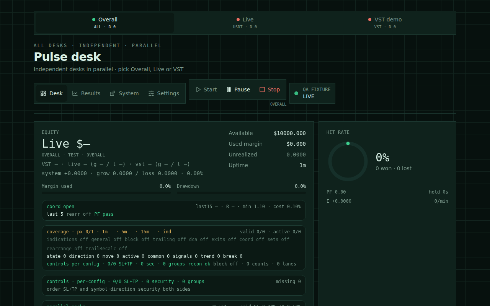
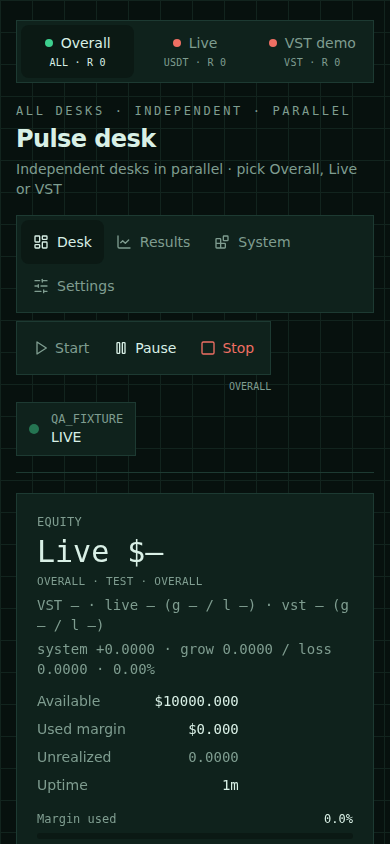
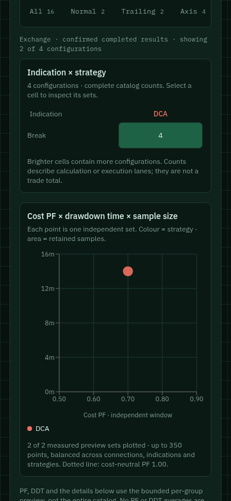
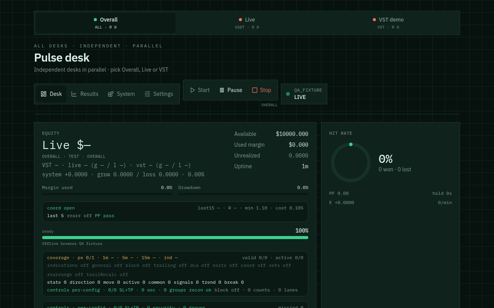
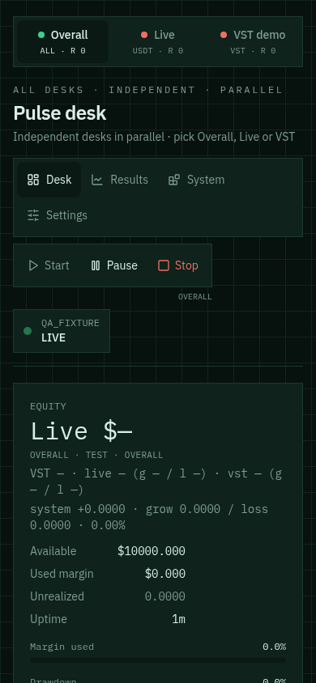
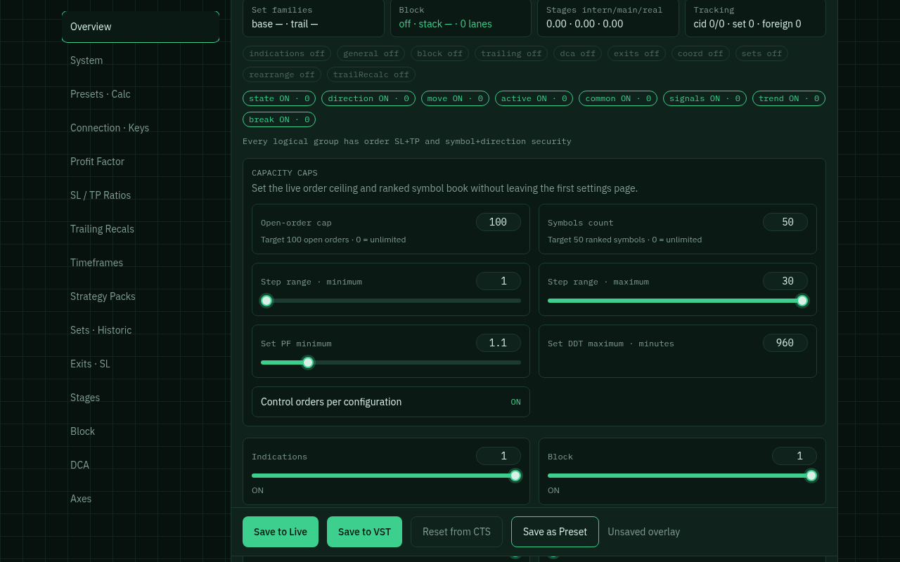

CTS-G · Prüfstand 9. September 2026 · Performance-Messung bis 03:22 UTC
UI geprüft. Weitere Fehler lokal korrigiert.
Die neue Version ist noch nicht auf dem Server abgenommen.
Installiert ist 761a9a8. Die zusätzlichen Korrekturen liegen in
0f66060, 2d0449b und 3cf8a80, ergänzt um die Trennung der Ausführungsplätze nach Verbindung und die Performance-Korrekturen in 2ce4bbf.
Die automatische Freigabeprüfung hat die Übertragung der neuen Quelle abgelehnt,
weil die konkrete Zustimmung nur 761a9a8 umfasste. Push und Merge sind noch ausstehend.
201 / 201Python-Tests · neue Quelle
399 / 399Engine-Prüfungen · neue Quelle
20 + 9Einstellungsbereiche + Ergebnis-Tabs durchgegangen
0VST-Neustarts und Crash-Zuwachs nach Installation beobachtet
Aktuelle Performance-Prüfung · 2ce4bbf
Die API selbst antwortete in den letzten sechs Messungen innerhalb von 22–71 ms. Bei der Oberfläche waren vermeidbare Downloads und Wartezeiten nachweisbar.
Die neue Quelle ist lokal geprüft und noch nicht auf dem Server installiert.
| Befund | Änderung | Nachweis |
|---|
| Overall lädt zwei große Pakete und wartet auf beide. Der Verbindungskatalog lädt zusätzlich einen Voll-Snapshot. | Ein bevorzugter Abruf; Fallback nach 750 ms bei langsamer Antwort oder sofort nach einem Fehler. Erste gültige Antwort gewinnt, verbleibende Abrufe werden abgebrochen. Gemeinsame Frist: acht Sekunden. | Ein gesunder Overall-Abruf: ein Paket; gesunder Katalog: kein Voll-Snapshot. Tests für hängende, falsche und fehlerhafte Antworten bestanden. |
| Manuelle Aktualisierungen können mehrere Poll-Schleifen starten. | Eine laufende und höchstens eine vorgemerkte Aktualisierung; Abbruch beim Seiten-/Verbindungswechsel. Langsameres Polling bei verborgenem Tab. | 250 Ereignisse während eines hängenden Abrufs: eine aktive Abfrage, genau eine Folgeaktualisierung. Transiente Fehler beenden die Schleife nicht. |
| Settings/System warten auf Stats; Config hat keine eigene Frist. | Statistik, Konfiguration und Verbindung werden unabhängig geladen. Config-Frist vier Sekunden. Fehlgeschlagene Folgeabrufe überschreiben die zuletzt geladene Konfiguration nicht. | 251 erfolgreiche Config-Poll-Zyklen während eines absichtlich hängenden Statistikaufrufs; verspätete Antworten nach Abbruch werden verworfen. |
| Ein aggregierter Fallback kann Daten der anderen Verbindung übernehmen. | Nur zuordenbare Orders, Abschlüsse und Kennzahlen werden in eine Verbindungsansicht übernommen. Gemischte Sets, Events und Kostenwerte werden nicht als verbindungsspezifisch ausgegeben. | Tests mit widersprüchlichen Verbindungs-/Einheitenangaben und falscher Hauptantwort bestanden. |
| Overall liest jede Verbindung mehrfach; Fortschritt und Fehlerauswahl können irreführen. | Ein Snapshot je Verbindung und Antwort; Fehler zuerst, mit Verbindungskennung. Der Fortschritt bleibt je Verbindung sichtbar, der zusätzliche geerbte Balken entfällt. | Zwei Reads für zwei Verbindungen; unveränderte Eingabe-Snapshots, beide Fehler sichtbar. Gestoppte Dienste bleiben auch bei altem Running-Snapshot gestoppt. |
| Lange Engine-Zyklen wurden allein durch ihre Dauer als I/O markiert. | Getrennte CPU- und verstrichene Zeit, Zeiten je Verarbeitungsschritt, aktiver Schritt und sichtbare Zeitüberschreitung. Feste Felder ohne wachsende Trace-Historie. | Rechenlast und fünf Sekunden I/O-Wartezeit werden getrennt geprüft; Messung bleibt auch nach Exceptions konsistent. Noch keine Messung dieser neuen Felder auf VST möglich. |
Grenze der Aussage: VST lief weiter. Die Prozess-ID blieb 3939798, automatische Neustarts: 0.
Um 03:22 UTC wurden 96–97 interne Positionen beobachtet. Das bestätigt noch keine vollständige Abnahme von 50–250 gleichzeitig korrekt geschützten Exchange-Orders.
Einige Zyklen dauerten weiterhin 6,0–6,8 Sekunden; eine dauerhaft kurze Zykluszeit ist nicht nachgewiesen. Die zuvor gemessenen 132 ms zeigen, dass die Verzögerung zeitweise auftritt.
Die aktuelle Live-Prozess-ID ist 3964893; ihr Wechsel erfolgte außerhalb dieser Arbeit. Live wurde von uns nicht neu gestartet.
Aktuelle Prüfungen: 201 Python-Tests, 399 Engine-Prüfungen, 13 Release-Verträge, 191 JavaScript-Tests mit vier bestehenden Umgebungs-Skips,
68 TypeScript-Tests und 40 Smoke-Verträge bestanden. Typecheck, Lint und Build bestanden.
Prüfzusammenfassung · Drei zeitlich getrennte Runtime-Messungen ·
Python-Protokoll · Engine-Protokoll · Frontend-Tests
Aktueller Render-Nachweis auf 2ce4bbf: Dev und Build jeweils Desktop/Mobile mit vollständig geladener Statistik,
HTTP 200, identischem Text-Hash dada68d8e4203a58700a528228a5b7300198ba10b3764135a762c181c4cc0d95,
keinem Seitenüberlauf und keinen Page-Exceptions. Der erste kalte Dev-Lauf erfasste noch den Ladezustand;
eine optionale Bereitschaftsbedingung wartet nun auf das tatsächliche Ende der Ladeanzeige. Alle Screenshots wurden visuell geprüft.
Die Fehler der externen Schrift und Preview-Erweiterung bleiben sichtbar: beide Smoke-Läufe enden mit Exit 2. Eine vollständige Browser-Abnahme ist weiterhin offen.
Aktuelles Dev-Protokoll · Aktuelles Build-Protokoll
Aktuelle lokale Render-Prüfung

Neue Quelle, Dev, isolierte Testdaten.

Neue Quelle, gebaut, 390 × 844.
Bisherige UI-Fehler und Korrekturen
| Befund | Korrektur | Prüfung / Grenze |
|---|
| Controls verbreitert die mobile Seite auf 770 statt 390 px. | Grid-Container können schrumpfen; lange Aktivitätszeilen umbrechen. | Ursache im installierten Browser isoliert: korrigierte Mindestbreite ergibt 390 px. Vollständige neue Version noch nicht dort installiert. |
| Lange Set-Bezeichnungen und zu viele gleichzeitig sichtbare Zeilen. | Kurze Identität, vollständige Informationen aufklappbar; 25 Zeilen pro Seite, acht Karten auf der Startseite; Tabellen scrollen im eigenen Container. | Typecheck, Lint und Build bestanden. Vollständige Browser-Abnahme der neuen Komponenten offen. |
| „position not exist“ löst zahlreiche weitere Schutzorder-Versuche aus. Beobachtet: Code 109420, danach 109429 und etwa sieben Minuten Sperre. | Nach der ersten Ablehnung keine alternativen Preis-/Payload-Versuche; 60 s Wartezeit gemeinsam für Symbol und Richtung. Andere Symbole und Richtungen bleiben unabhängig. Bestehende Schutz-IDs und das Buch bleiben bis zur Klärung erhalten. | 250 gleichgerichtete Sets: ein fehlgeschlagener Einzelauftrag, keine weiteren Batch-/Fallback-Aufträge; erneute Zulassung nach Ablauf geprüft. Teilweise erfolgreiche Batches bleiben erhalten. Noch nicht auf VST abgenommen. |
| Ausstehende Positionsbestätigung wird als bestätigte Abweichung angezeigt. | Pending-Status folgt der tatsächlichen Reconciliation, auch in Overall. Bestätigte Fehler behalten Vorrang. | Reproduktions- und Aggregationstest bestanden. |
| Tests-Export schneidet zuerst einsortierte Fehler ab. | Export behält den Anfang der nach Fehlern priorisierten Liste. | Im installierten Stand werden 293 bestandene / ein fehlgeschlagener Engine-Test gezählt; dieser Fehler war in der exportierten Teilliste nicht sichtbar. Über das erhaltene Serverlog als qa-slot-unique identifiziert. |
| Unabhängige Ausführungen desselben Sets werden als doppelte Orders gewertet. | Slot-Prüfung berücksichtigt die stabile Ausführungs-ID und Verbindung. Der Stats-Export liefert Ausführungs-ID und Strategie mit. | 41 vorhandene VST-Positionen anonymisiert ausgewertet: alte Prüfung meldet ein Duplikat, korrigierte Prüfung keines. Betroffen waren zwei getrennte Ausführungs- und Schutzgruppen. Tests erkennen weiterhin eine echte doppelte Ausführung und halten X01/X02 unabhängig. |
| Malformed Exchange-Daten könnten eine falsche Flat-Bestätigung erzeugen. | Gemeinsame strenge Snapshot-Validierung für Reconciliation und Flat-Prüfung. | Fehlende, ungültige und nicht endliche Mengen sowie genaue Symbol-/Richtungszuordnung geprüft. |
| Falsche R-Fensterbeschriftung und veralteter Set-Standardhinweis. | R25 bezeichnet die tatsächlichen letzten 25 Ergebnisse; Set-Cap-Hinweis nennt korrekt 110. SQLite-Testverbindung wird explizit geschlossen. | 196 Python-Tests ohne die frühere ResourceWarning; finale statische Prüfungen bestanden. |
Durchgeführte UI-Abläufe auf 761a9a8
- Tatsächliche VST-Ansicht: Startseite, Systemseite und alle Ergebnis-Tabs Overview, Coverage, Indications, Strategies, Sets, Controls, Errors, Tests und Report.
- Alle 20 Settings-Bereiche bei 390 × 844 px: Overview, System, Presets, Connection, Profit, Risk, Trailing, Timeframes, Packs, Sets, Exits, Stages, Block, DCA, Axes, Volume, Controls, Indication, Pulse und Symbols. Kein Seitenüberlauf oder sichtbares NaN/undefined; zunächst zu früh gelesene Bereiche wurden mit bestätigter Auswahl erneut geprüft.
- Diagramme mit tatsächlichen VST-Daten: 108 Messpunkte in der beobachteten System-Vorschau. System und Exchange behalten separate Messungen.
- Isolierte Testdaten: System 60 / Exchange 256 Konfigurationen. Auswahl Exchange → Break → TP 0,3 % → DCA ergibt zwei Vorschauzeilen für vier Konfigurationen und zwei Messpunkte.
- Matrixzelle setzt die passenden Filter; PF- und DDT-Sortierung, Vor-/Zurückblättern mit 25 Zeilen und CSV-Download geprüft. CSV erhält PF 0,70, DDT 840 s, Winrate 0 und Erwartungswert −0,003 korrekt.
- Bei ausgeschalteter Axis verschwinden Tab, Matrixspalte und Axis-Zeilen auch aus einer zuvor aktiven Axis-Auswahl. Testdaten anschließend wiederhergestellt.
- Step-Maximum zwischen Overview und Sets in beide Richtungen synchron: 30 → 29 → 30. Normal (General) ist im neuen Profil OFF. Keine Fixture-Einstellungen an eine Exchange gespeichert.
- „Back up now“ in der tatsächlichen VST-Oberfläche erfolgreich. Neueste SQLite-Sicherung: 3.121.152 Bytes,
PRAGMA quick_check = ok, drei erhaltene Backups. Ungültige Reset-Bestätigung lässt den Reset deaktiviert; bestehende Daten wurden nicht zurückgesetzt.
Browser- und Build-Nachweise
Entwicklungs- und Build-Vorschau des installierten Releases wurden auf Desktop und Mobile aufgenommen und visuell geprüft.
Nach vollständigem Laden stimmen die Text-Hashes aller vier Ansichten überein; keine Console-/Page-Fehler und kein Seitenüberlauf auf der Startseite.
Der erste kalte Dev-Aufruf erfasste noch den Ladezustand. Die gezielte Wiederholung löste diese Abweichung auf.
Der lokale Browserlauf der neuen Quelle erreicht die Anwendung mit HTTP 200 und ohne Seitenüberlauf oder JavaScript-Exception.
Er besteht den strengen Smoke-Test jedoch nicht: Die Umgebung liefert ERR_EMPTY_RESPONSE für externe Schrift- und Preview-Erweiterungsressourcen
(/css2, /grok-app-builder/extensions.js). Der lokale Agent-Browser-Daemon startet ebenfalls nicht zuverlässig.
Diese Ergebnisse gelten ausdrücklich nicht als vollständige Browser-Abnahme.
Zusätzlich bestanden: 13 Release-Verträge, 191 JavaScript-Tests (vier bestehende Umgebungs-Skips), 54 TypeScript-Tests und 40 Smoke-Vertragsprüfungen.
Native Redis-Prüfung auf installiertem 761a9a8: 15 Tests mit isolierter Redis-Instanz bestanden.
Nach der zusätzlichen Slot-Korrektur wurden die 16 betroffenen Order-Tests und fünf Report-Tests erneut bestanden; die 16 sind bereits Teil der oben genannten Python-Suite.
Typecheck, Lint, Build und Git-Whitespace-Prüfung bestanden für die neue Quelle.
Belegdateien öffnen
Anonymisierte Prüfung der 41 bestehenden VST-Positionen

Installierte Version, isolierte Testdaten: zwei unabhängige Sets mit identischen Messwerten überlagern sich im Diagramm.
Desktop-/Mobile-Ansichten

Dev, 1280 × 800.
Build, 1280 × 800.

Build, 390 × 844.

Settings mit isolierten Testdaten.
VST-Laufzeit und offene Abnahme
761a9a8 wurde aus dem checksum-geprüften Archiv und Git-Bundle neu installiert, mit --no-live.
VST-PID 3939798 läuft seit 02:03 UTC; X01-PID 3908430 blieb bei dieser Installation und den Prüfungen unverändert.
Die temporären QA-Dienste und Browser wurden beendet; VST, X01 und Desk bleiben aktiv.
| Beobachtung 02:48 UTC | Wert |
|---|
| Laufzeit / Zyklen | 44 min 21 s / 3.027 |
| Interne Positionen / Exchange-Positionsgruppen | 34 / 5; zuvor 32 / 9 beobachtet. Gruppen sind keine unabhängigen Orderzahlen. |
| General-Basis / Normal-Ausführung | ON / OFF; 21.840 Sets und fortschreitende Replay-Verarbeitung. |
| CPU / Speicher / Requests | 100,4 % eines Kerns / 2.413,5 MiB / 2,45 pro Sekunde. |
| Persistente Statistik-DB | 3.371.008 Bytes / 5.076 Zeilen bzw. Schlüssel; Crash- und Recovery-Zähler 0. |
| Konfigurationscache | 287 Einträge, Grenze 350, Reduktionsziel 80 %; 2.745.510 erfasste Bytes. Keine Cachefehler. |
| Gemeinsames Redis | 190.921 Schlüssel, 850.476.440 Bytes; AOF und Snapshot ok. Weitere Dienste verwenden diese Instanz; Änderungen ihrer Gesamtsumme werden nicht dieser Arbeit zugeschrieben. |
| Exit / API-Fehler | Letzte Exit-Auswahl „peak“. 68 erfasste API-Fehler; daher keine Behauptung eines fehlerfreien Exchange-Betriebs. |
Die vollständige aktuelle 50-Symbol-Koordination war im letzten Snapshot noch nicht abgeschlossen.
Das fortgesetzte manuelle Replay verwendete 420 Bars / sieben Stunden, obwohl das gespeicherte Profil 720 Bars enthält.
Die frühere Offline-Prüfung über zwölf Stunden ist im vorherigen Bericht dokumentiert;
sie ersetzt keinen abgeschlossenen aktuellen 50-Symbol-/12-Stunden-VST-Lauf.
Vor einer Produktionsfreigabe erforderlich: das konkret gesicherte neue Release freigeben, auf VST installieren,
UI und Schutzorder-Recovery mit dieser Quelle abnehmen, die korrigierte Slot-Prüfung im laufenden System bestätigen sowie die vollständige historische Koordination und hohe bestätigte Orderzahl prüfen.
50–250+ Exchange-Orders und unbegrenzter störungsfreier Betrieb sind nicht nachgewiesen. Finanzielle Zulassungsgrenzen wurden dafür nicht gelockert.